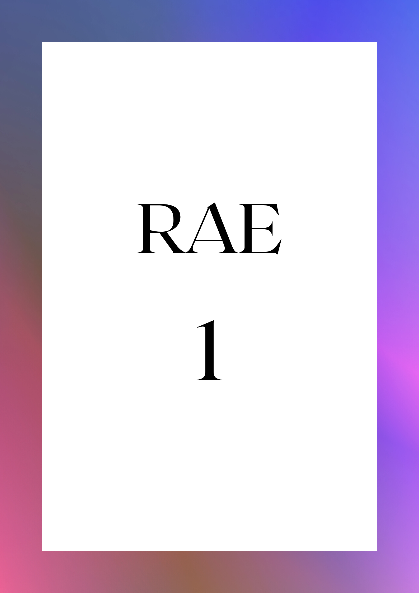

Cambio climático y recursos hídricos en Colombia

Cambio climático y su impacto sobre la salud humana
Deforestación y fragmentación en las áreas más biodiversas de la Cordillera Occidental de Antioquia (Colombia)
Effects of deforestation and forest degradation on ecosystem service indicators across the Southwestern Amazon
A global synthesis of hydrological sensitivities to deforestation and forestation
Assessment of livestock greenhouse gases in Colombia between 1995 and 2015
Cambio climático y recursos hídricos en Colombia
Cambio climático y recursos hídricos en Colombia
Cambio climático y recursos hídricos en Colombia
Cambio climático y recursos hídricos en Colombia